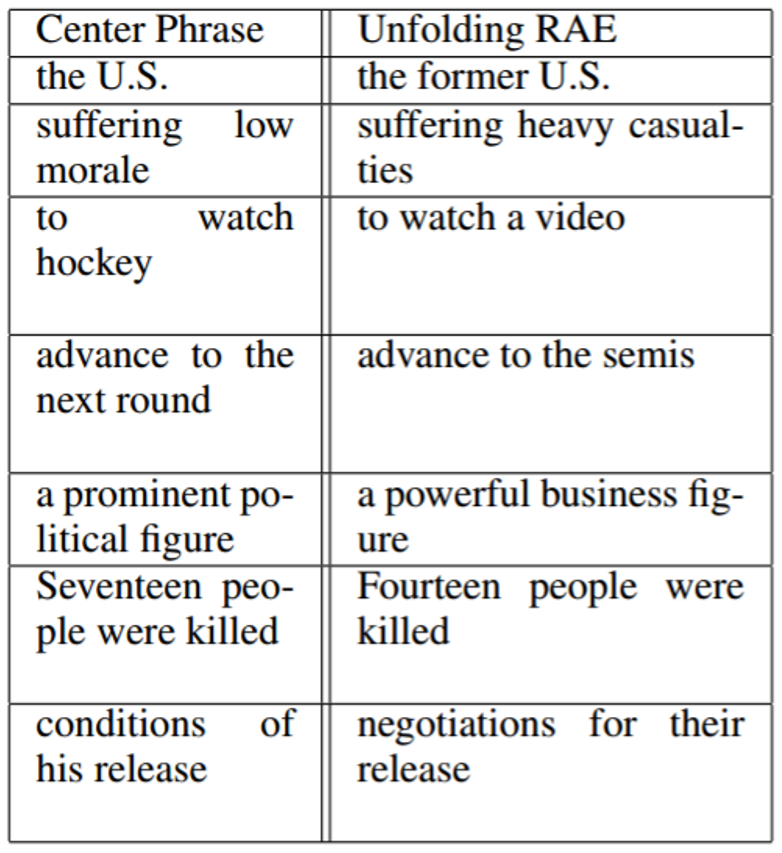

We will now propose various improvements to the recursive autoencoders on the previous page:
We use unfolding recursive autoencoders to generate phrase representations for two given phrases. To give the best representation, we use the parse tree of the phrase as the RAE tree.
We then create a variable-sized similarity matrix. The rows are ‘labelled’ with each word vector, followed by each non-terminal RAE tree node vector, for the first phrase, and the columns similarly for the second phrase. It is filled with Euclidean distances between the respective vectors.
Although there are already tell-tale signs for paraphrases at this point (e.g. low distances close to the diagonal, from similar word vectors), is not extremely useful since the dimensions of the matrix are variable, depending on the size of the RAE trees.
We want to convert our similarity matrix $S$ into a matrix $S'$ with fixed dimensions $n \times n$. We do this simply by partitioning the rows and columns of $S$ into $n$ parts. $S'$ is then defined as the matrix of minimum values of each respective region formed by the previous step.
Note that other approaches are possible, such as using an average, but this is more likely to lose important correlations.
We can then determine whether two phrases are paraphrases simply by considering this final matrix $S'$. [1, 2]

Code that implements this method can be found at http://www.socher.org/index.php/Main/DynamicPoolingAndUnfoldingRecursiveAutoencodersForParaphraseDetection.
[1] Socher R, Manning C, Bengio Y. Machine Learning Summer School Lisbon; 2014. Available from: http://lxmls.it.pt/2014/socher-_lxmls.pdf.
[2] Richard Socher and Eric H Huang and Jeffrey Pennington and Andrew Y Ng and Christopher D Manning. Dynamic Pooling and Unfolding Recursive Autoencoders for Paraphrase Detection. In: Advances in Neural Information Processing Systems 24; 2011. Available from: http://www.socher.org/index.php/Main/DynamicPoolingAndUnfoldingRecursiveAutoencodersForParaphraseDetection.